Posted onEdited onViews: Word count in article: 1.4kReading time ≈5 mins.
Blender Tutorial on Generating Synthetic Data
How to make an OK MMD video
MikuMikuDance (MMD) is a simple and powerful tool, as we used in the previous paper. However, users cannot easily inject scripts to access the inner variables. Also, with respect to the rendering, it has a physical limitation of 60 FPS, which restricts the direct simulation of DVS sensors. Lastly, there are many processes in the simulation loop where manual adjustment is forced, which limit the scalability. Therefore, we choose another route that concentrates on Blender and tries to rule out manual participation to the largest extent.
First, as the .vmd files distributed on the internet usually only contain the joints' movement and no mesh physics included, we will have a hard time dealing with the clothes materials, and physics in Blender, as Blender doesn't automatically use a preset for these factors like MMD. Therefore, we'd better take care of them in advance in MMD.
Here we are going to use a “successor” software of MMD, which is called MikuMikuMotion (MMM). Import your .pmx and .vmd files into MMM, and bake the physical mesh movement to a separate .vmd file. Turn the Always button on in the Physics Tab to make sure you calculate the physics for each frame, then click Record to bake your movement when everything is ready.
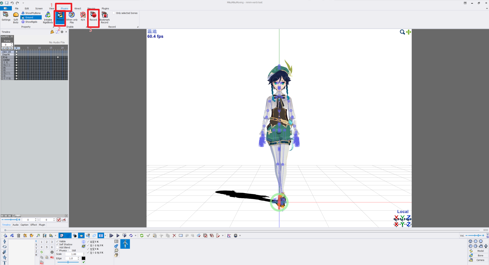
Then dump your recorded motion to another .vmd file:
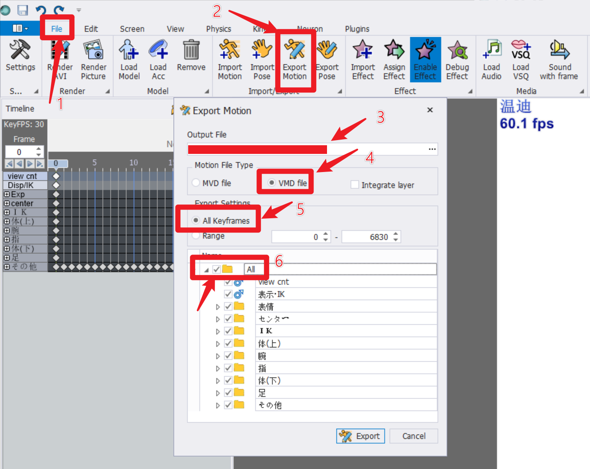
Ok, then let's switch to Blender.
You have to install a plugin mmd_tools for Blender at first. It will help you to import your .pmx model files and .vmd motion files, as Blender doesn't support these file types natively. If you install it successfully, you will be able to see a panel like this on your sidebar:
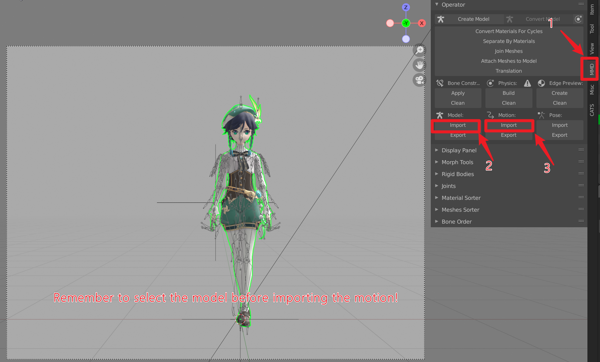
Click Import, then you could import your model that is used for recording in MMM to Blender. Then, make sure you clicked and selected the model that you just imported, and click the Import button under the tab Motion to import the baked .vmd motion file you get from MMM.
After that, you may notice that the skin color of your model looks magenta, then you have to follow the following step to repair that:
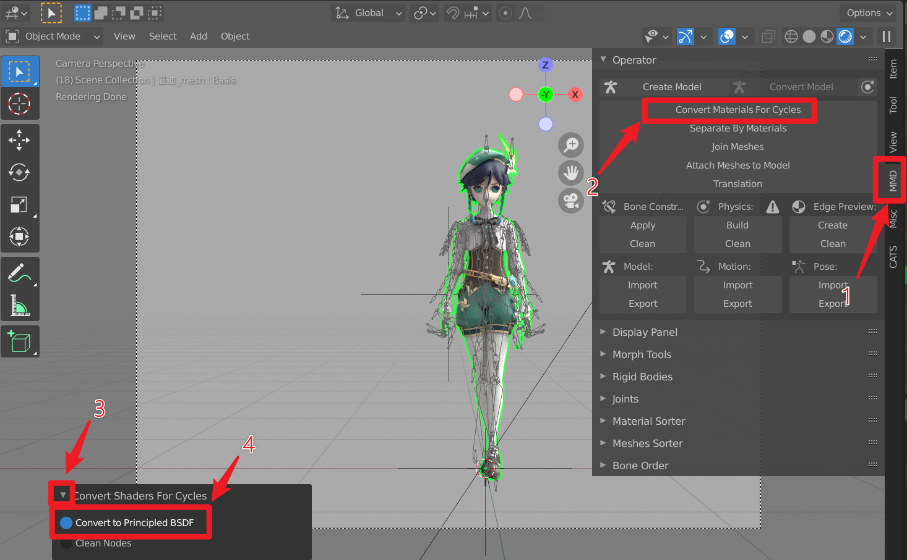
If you also have a camera's trajectory, please click on the camera in the explorer and click Motion->Import in MMD side panel to select your .vmd camera motion file and import it.
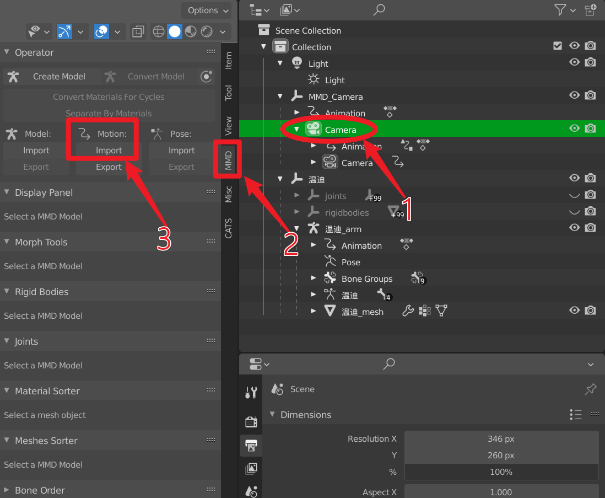
Then, it's time to set the lighting. Well, honestly speaking, I don't really care too much about lighting, as the requirement of generating synthetic data is not that high, so let's simply light everything up.
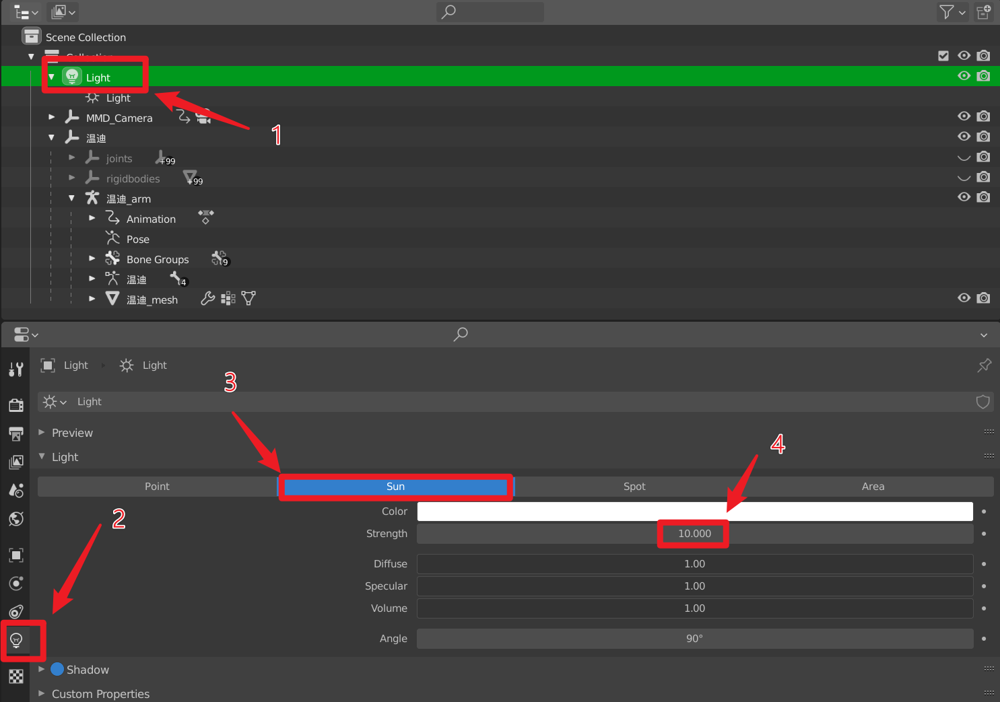
We are almost there, and next, setting the output parameters: Remember to change your resolution, and set your output path as well as the file format. Here the resolution 346x260 is the resolution for event camera DAVIS346, which is the camera we are currently using.
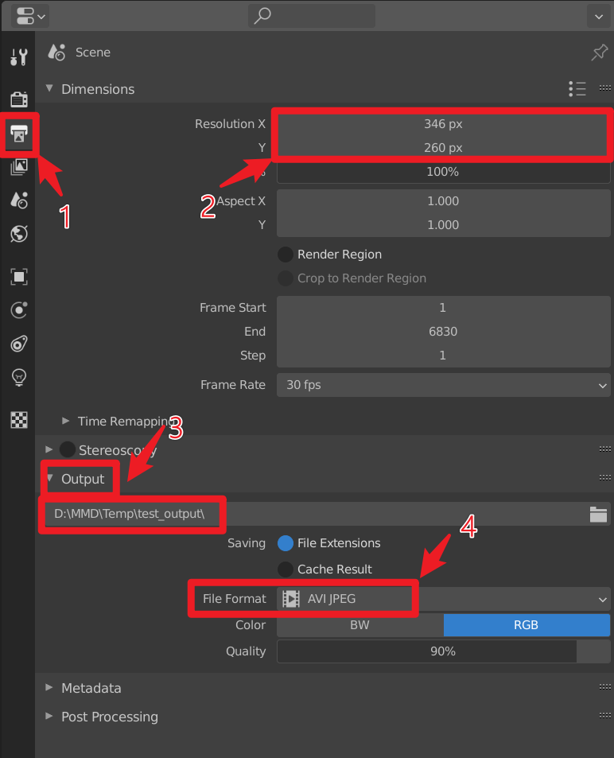
Next, let's set some render properties: For the render engine, you can use either Eevee or Cycles, but if you choose Cycles, remember to turn on the GPU rendering option under it to speed up. Also, if you want the background of your video to be pure white/transparent/other pure color, please check the Tranparent in Film section. Moreover, make sure to change the View Transform from Filmic to Standard, the color looks more Real that way.
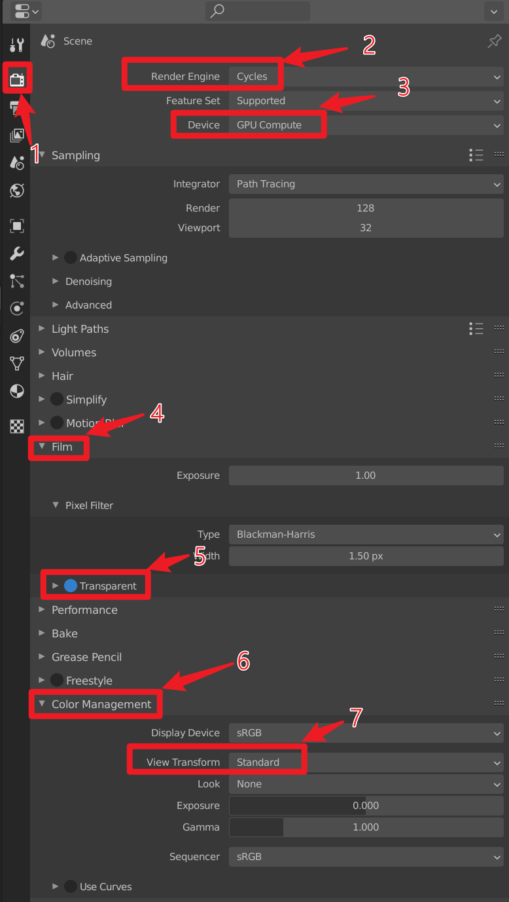
Lastly, continuing from the last point, if you want to have a pure color background, then you have to add a Background here: Go to the Compositing Tab on the top bar, then add an Alpha Over node and drag it between the existing two nodes. Connect it as the figure shows, then set the first Image with the pure color you desire. All set. (Notice, if there is nothing in this board, click the Use Nodes on the inner menu row, near the Add and Nodes to show the basic panels.)
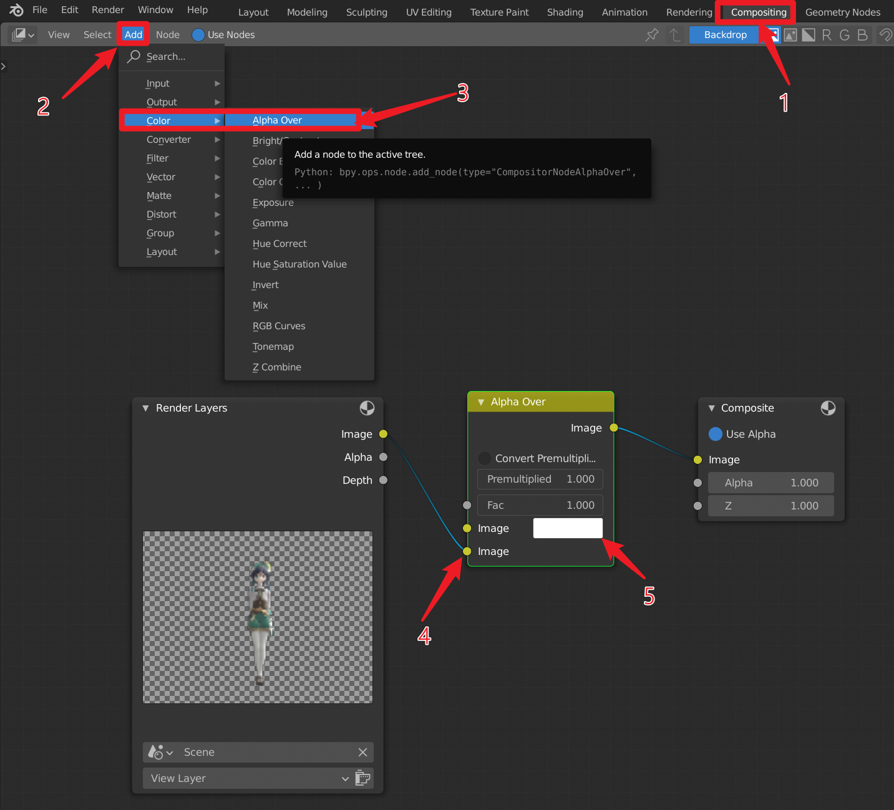
Now everything is prepared, let's render the frame/video. Click on the Render menu, then choose render frame/video, you can then find your video in the output folder you set before.
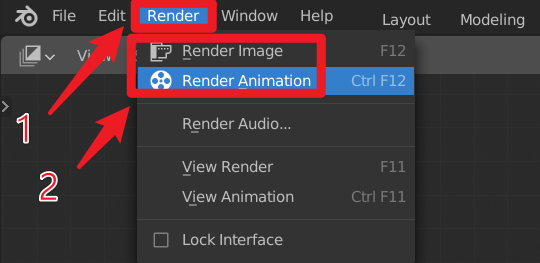
Generate Mask Video
One more thing, if you want to dump the human mask, simple change the wires in Composition Panel is fine.
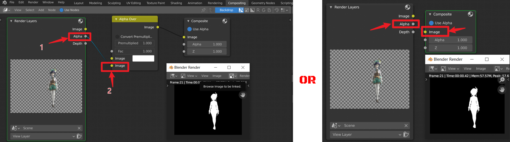image-20220714223747030
Generate Depth Video
If you even want to have the depth video, it's still easy enough: add another node in Compositing Tab to map a certain range of depth to [0,1].
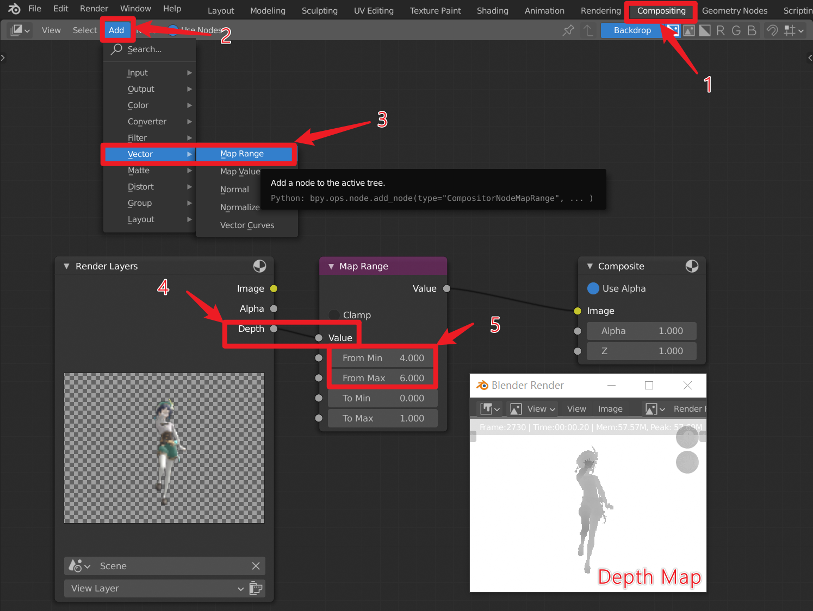
You need to tweak this range carefully based on your model's actual moving range.
Better Lighting Settings (Like Default Material Preview)
You may notice that the default material preview looks great, but it's not easy to imitate that effect. Here let's take a step to try to reach a similar level of the effect by applying skybox texture.
In the beginning, you should understand what Skybox is used for. Skybox is used as a sort of Directional Colored Lighting in all directions. Imagine that you are surrounded by a certain environment, and the objects in each direction could reflect the light of their own color. This is what the sky box is used for. Compared to the Sky box, actually, it's more like a sky sphere, which is a sphere around you. You could control the Strength of the sky box, just like you modify the lighting strength.
First, let's enable a built-in plugin called Node Wrangler which could enable us to quickly add texture-related pipelines. Go to Edit->Preference->Add-ons.
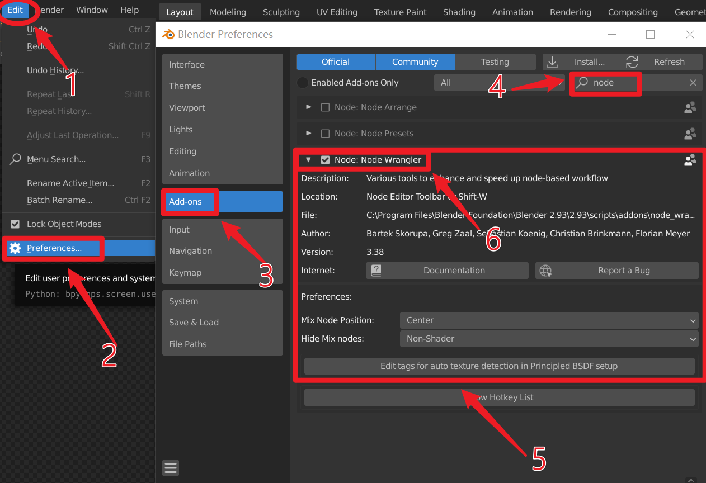
Modify the Shader Editor and switch the Object to World on its right. Also, make sure you turned Use Nodes option on. Then you'll be able to modify the environmental settings, like the sky box around the world. This is an informative figure. You should first select the Node Groupe which contains Background output port.
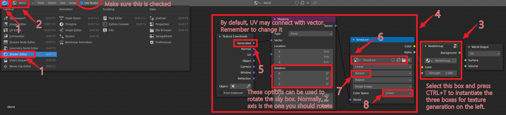
Then, press CTRL+T to instantiate the three boxes on its left together. Next, connect the General option to Vector, and set your sky boxes' rotation angles. Usually, if you don't know how to rotate and just want to rotate like you could do in Material Preview mode, please make sure that you only rotate on the Z axis.
Then, it's time to load your actual sky box file. Go to your installation directory of Blender, and go to <Blender Installation Folder>\2.93\datafiles\studiolights\world directory, you can find all the default sky boxes Blender uses in its Material Preview mode. For me, the installation folder is at C:\Program Files\Blender Foundation\Blender 2.93, which is the default location.
Lastly, if you want to change the lighting strength, make sure to modify the Strength option in the Node Group box. Here I set it to 2.
Still, you may need to have a default sunlighting for a better 3D effect.
Done!
Script Your Operations and Repeat!
Blender has a wonderful feature: it will record and tell you the python command equivalent for all the operations you take! Therefore, if you have done a pipeline correctly, you could simply copy all these commands and make them into a script easily. You could found the console here:
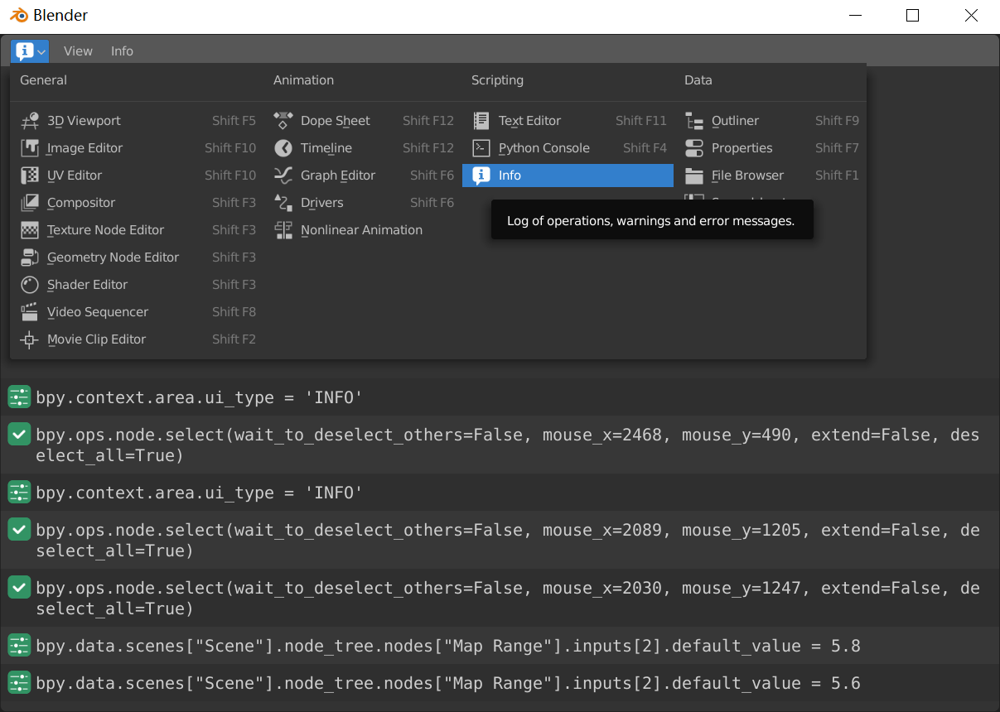
You can even select multiple lines and copy them into corresponding python code blocks, which is an amazing function.